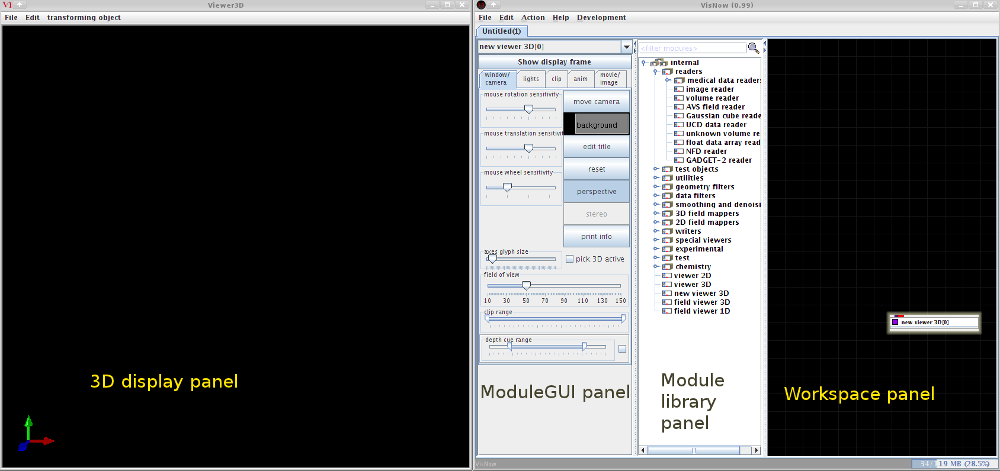
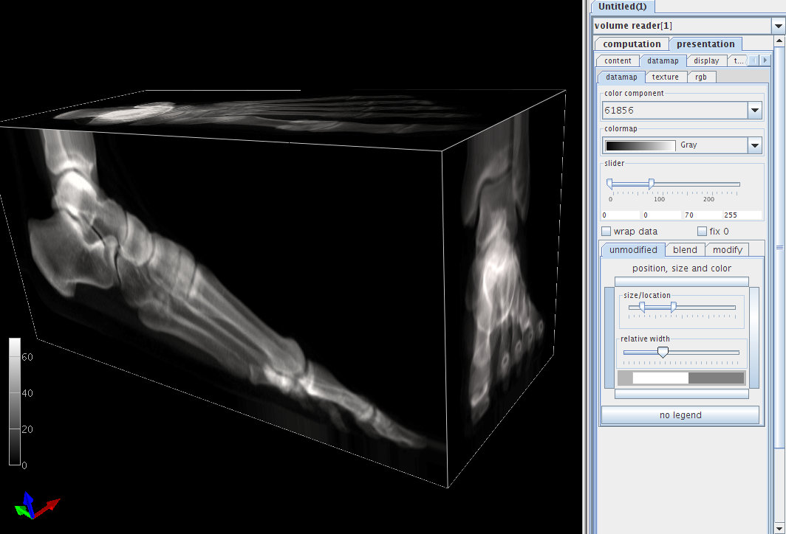
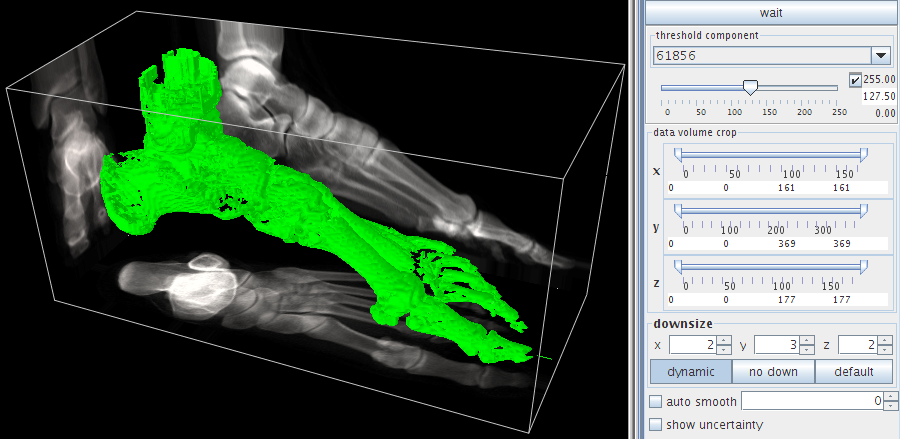

VisNow can be installed on any MS Windows, Linux and Apple Mac satisfying the following requirements:
1 GB of memory (the more the better)
Open GL capable graphics (hardware 3D acceleration recommended)
50 MB free disk space
Java 1.6 runtime environment installed (Java Development kit is required to run ViScript programs)
either no Java 3D or Java3D 1.5.* installed (if an older version of Java3D is installed in the Java directory it should be uninstalled before installation of the VisNow)
To install VisNow:
Download the installation file vnsetup.jar from http://visnow.icm.edu.pl
Go to the downloads directory
Run the installer with the command java -jar vnsetup.jar , when asked, select the VisNow directory at your convenience.
Edit the start script (visnow for Linux and Mac, visnow.bat for MS Windows setting proper amount of memory to be used by VisNow on your system: in the field -Xmx1024M change 1024 to your RAM amount minus 512M-1024M (for example, on a 4GB machine use -Xmx3500M
(Optional) For Linux and Mac users - copy the edited start script to the standard directory /usr/bin; install the VisNow launcher on the desktop.
We recommend also to download sample_data.zip from http://visnow.icm.edu.pl and unzip it to a directory of your convenience.
To start VisNow run type {installation directory}/visnow for Linux and Mac or {installation directory}\visnow.bat for MS Windows or click the visnow launcher if installed. In a moment you should see the standard windows of the VisNow:

The left window will be used for displaying the visualization output. The right one is the main control window divided into
Module GUI panel
Module library panel
Morkspace panel.
Let us start now with reading some test data. To do this, find the volume reader module in the library panel and drag it with the left mouse button to the workspace. Note that the new module box appears in the workspace together with a red line connecting it to the new viewer 3D module box and that the module GUI panel shows now a new GUI page.
Click the browse button, navigate to the sample_data/volume directory and open the CTsample.dat file.
This file contains a byte volume of dimensions 161x369x177 voxels of a CT scan of a human foot. Note a wireframe box that appeared in the display window and a description of the file content in the GUI panel. We can now start to analyze our dataset. In the module GUI panel choose the presentation tab. Four sub-tabs (content, datamap, display and transform) are now displayed and the content tab is opened. Check all the boxes under shown extern faces as surface label and select color extern faces by avg. Go to the 3D display panel and try to rotate the box with the left mouse button. You can now see that the volume contains a human foot Roentgen tomography data. Select now the datamap tab to play with the colormap. Try some colormaps, modify the data range with the slider below (a good choice is 0-70 range), click the left button framing the colormap legend area at the bottom. A sample result of these actions is shown below.

Since the displayed closed box will hide all the volume interior, we can open it going to the display tab and selecting back faces button.
Let us now try the more detailed investigation of our data volume. We will try one of the standard visualization method – .isosurface To create an isosurface one has to instantiate the isosurface module.
It can be done in two ways:
By opening the 3D field mappers tab in the Module library panel , dragging the isosurface item to the workspace (it will be automatically connected to the new viewer 3D module) and connecting the output port of the volume reader module (the blue rectangle at the bottom of the module box) with the leftmost input port of isosurface
Alternatively, right mouse button click on the blue output port of the volume reader will display a small menu. Choose attach, navigate to 3D field mappers > isosurface > inField and double-click inField. The isosurface module will emerge at the workspace with proper connections.
In a moment a green colored surface of foot bones will show in the 3D display panel and isosurface controls will be shown in the module GUI panel. Note the computation tab containing widgets controlling parameters of isosurface creation and the presentation tab.

Let us try first various isosurface thresholds set with the topmost slider – e.g. ~25 for outer (skin) surface, ~65 for tendons and bones, ~80 for full bones and ~200 for highly calcified bone parts. For the sake of speed of computations some details have been overlooked – the isosurface has been computed for downsized (sampled) data set only. In the downsize subwindow we can see that the data were sampled along the x and z axes by a factor of 2 and by a factor of 3 along the y axis. To recover full resolution, press the no down button and smoother and more detailed full resolution isosurface will be shown in a few seconds. To get rid of some discretization artefacts one can check the auto smooth box setting smooth value at 1-3.
We can now modify the appearance of our isosurface and play with the 3D display settings.